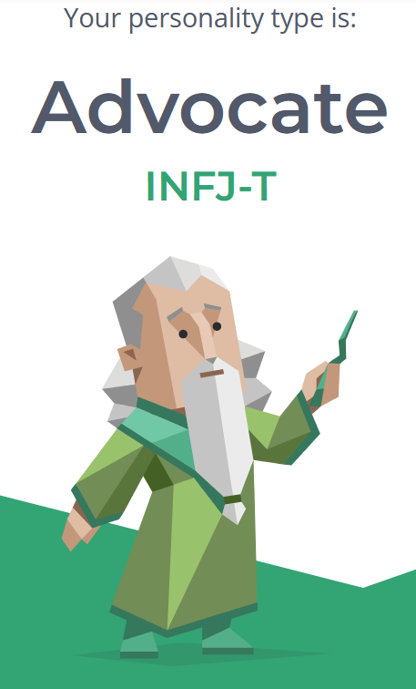
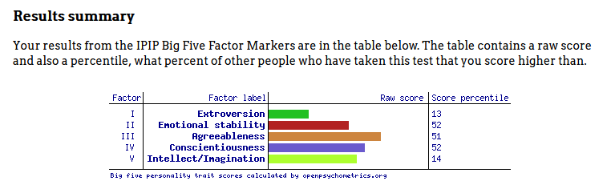
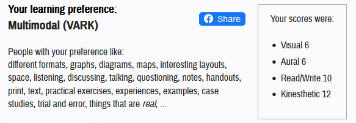

Personal Information
I'm Jordan Brazier, my student number and email are s3979972 and s3979972@student.rmit.edu.au. I'm Australian with Danish heritage, I graduated Year 12 in 2021 with a Certificate III in information, digital media and technology. I am passionate about cooking, and aside from that my favourite pasttimes are playing with Pablo, my pet blue tongue lizard, and working on my computer.
Interest in IT
I have an interest in creating websites and experience in coding languages such as PHP, HTML and SQL as well as building and working on electronics like desktop computers, laptops and mobile phones. My passion for electronics and software started as far back as I can remember when I got my first computer and started modding games like Minecraft and Skyrim. I attribute my interest in website development to my dad, when I was a kid, he would go through what he was trying to do while I would watch him building and debugging his own websites.
I chose to study at RMIT because they are a respected, leading university recognized for innovation in technology and design. I feel as though RMIT would give me the best education and chance at success in the IT industry by studying and learning under experts in this field with access to state of the art facilities.
I am still not entirely sure of what I want to study during my time at RMIT, however, currently I hope to gain industry-leading knowledge in cyber-security, website development, networking and artificial intelligence, and to grow my communication and teamwork skills by working productively in teams and groups of likeminded peers.
Ideal Job
Security Analyst for the Sunshine Coast Council seek.com.au
Working as a security analyst for the Sunshine Coast council would include the effective planning, integration and implementation of new cybersecurity initiatives, and providing expertise in a range of toolsets used for auditting, logging and monitoring, as well as reducing risk by advising and educating staff and stakeholders on cybersecurity risks in order to reduce security violations and prevent damage to IT assets. Flexibility to work remotely and educate others in areas I am passionate about is what makes the job most appealing to me.
Success in this position would require tertiary education and industry-standard certifications in IT and cybersecurity, as well as professional experience in either field as well. This would include experience in using a range of monitoring and logging software, management of cybersecurity systems and processes, and risk reduction.
Currently I have a Certificate III in Information, Digital Media and Technology, which inlcudes entry-level experience in technical support, computer engineering, network administration, and web and digital media technologies.
Tertiary education majoring in cybersecurity as well as professional experience as a computer technician or network administrator would help build upon my current ICT knowledge and communication skills, and would provide me with sufficient qualifications and expertise in order to competently fulfill all roles required in this position
Personal Profile
 
The results of these tests don't mean a great deal to me personally, as I don't necessarily believe in personality or learning types, however it is interesting to learn more about myself and my personality.
I don't think these results will affect my behaviour or capacity to work in a team very much, however it may encourage me to be more outgoing and vocal when working in such an environment.
It may be a good idea to find team members that have different personalities than me, such as a higher degree of creativity or a tendancy to take lead of projects and give them a clearer purpose and methods of achieving our goals.
Project Idea
Overview
This project will be a machine learning model that scans emails and detects and flags spam and other malicious content.
Motivation
In this day and age, spam, phishing and other malicious scams are growing all the more common, with over 3.4 billion phishing emails and over 80 billion spam emails sent daily, nearly 85% of all emails contain malicious content. Email spam is attributed to costing businesses over $20 billion each year and phishing emails resulting in over 200,000 victims in the US in 2020 alone. There is a great need for effective methods of filtering and flagging malicious emails.
Description
This software will clean the text from emails and input them into a dataset where a machine learning model trained off the Naive Bayes algorithm will analyse them. In order to flag spam, the product will input incoming emails from the dataset into a machine learning model that will predict the likelihood of the email falling into a predetermined class by counting the occurrences of each word in the email and comparing them to the probability model, it will output a true/false parameter for each email based off the probability of it falling into either class.
Tools required
The product will require a code editor such as Visual Studio Code, and an algorithm and dataset for the probability model to be generated off. An open-source software library such as TensorFlow that will provide APIs and other resources in several coding languages will also be necessary for the creation of this project.
Skills required
In order to create this project, advanced knowledge of C++, MATLAB or Python will be required, as well as neural networking, data modelling, and mathematics such as statistics and linear algebra. A machine learning spam filter will require a dataset to train and test the model, the model itself to recognize patterns and make predictions, and a feature extraction algorithm that will transform raw data into derived values to reduce redundancy and increase efficiency of the model.
Outcome
If this project is successful, the outcome will be an application that is effective and efficient at classifying malicious emails and separating them from harmless ones. If implemented, specifically on a high enough level, this program will reduce spam and other malicious emails received drastically, and will have a significant impact on the prevalence of cybercrime such as phishing attacks and identity theft online.